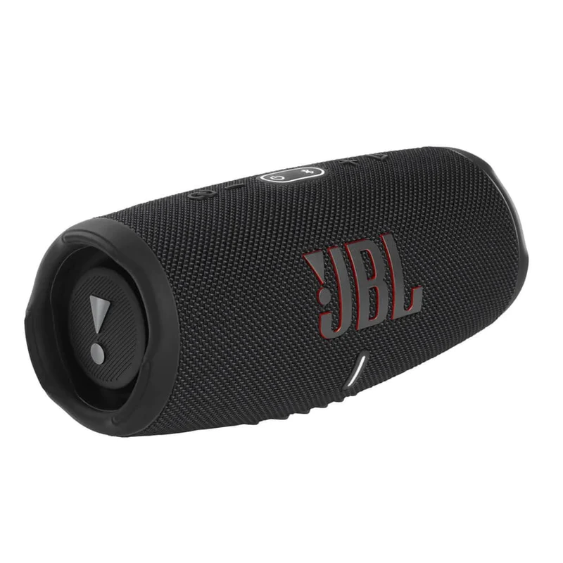
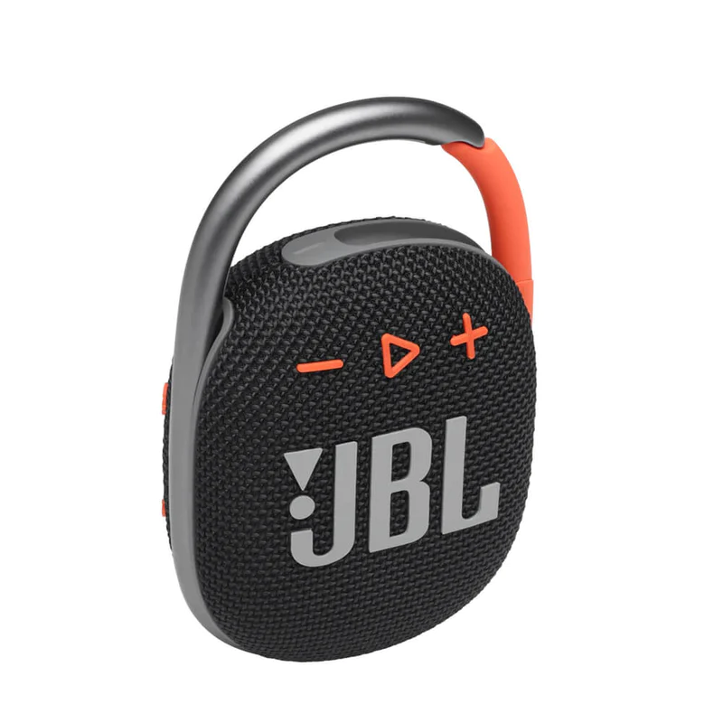

SOUNDS BETTER THAN EVER Feel your music. Flip 5's all new racetrack-shaped driver delivers high output.Enjoy booming bass in a compact package. BRING THE PARTY ANYWHERE Don't sweat the small stuff like charging your battery. Flip 5 gives you more than 12 hours of playtime. Keep the music going longer and louder with JBL's signature sound. MAKE A SPLASH WITH IPX7 WATERPROOF DESIGN Bring your speakers anywhere. Pool party? Perfect. Sudden cloudburst? Covered. Bash on the beach? Flip 5 is IPX7 waterproof up to three-feet deep for fearless outdoor entertainment. CRANK UP THE FUN WITH PARTYBOOST PartyBoost allows you to pair two JBL PartyBoost-compatible speakers together for stereo sound or link multiple JBL PartyBoost-compatible speakers to pump up your party. A RAINBOW OF COLOURS With 11 distinct colour options, the Flip 5 is anything but boring. Broaden your spectrum with JBL's signature sound.

BOLD JBL ORIGINAL PRO SOUND Take the amazing power of JBL Pro Sound with you. The JBL Charge 5 has an optimized long excursion driver, a separate tweeter, and dual JBL bass radiators, all delivering impressively rich and clear audio. Get that big room sound, even when outdoors. 20 HOURS OF PLAYTIME The fun dosen't have to stop. Packed with an incredible 20 hours of battery life, JBL Charge 5 lets you party all day and into the night. IP67 WATERPROOF AND DUSTPROOF To the pool. To the park. JBL Charge 5 is IP67 waterproof and dustproof, so you can bring your speaker anywhere. WIRELESS BLUETOOTH STREAMING Wirelessly connect up to 2 smartphones or tablets to the speaker and take turns enjoying JBL Pro sound. CRANK UP THE FUN WITH PARTYBOOST PartyBoost allows you to pair two JBL PartyBoost-compatible speakers together for stereo sound or link multiple JBL PartyBoost-compatible speakers to truly pump up your party. POWER UP WITH THE BUILT-IN POWERBANK Don't put the party on pause. A built-in powerbank lets you charge your devices without taking a break from the tunes.

RICH JBL ORIGINAL PRO SOUND JBL Pro Sound delivers surprisingly rich audio and punchy bass from Clip 4's compact size. BOLD STYLE AND ULTRA-PORTABLE DESIGN JBL Clip 4's ultra-portable design goes great with the latest styles, and its colorful fabrics and expressive details make it look as great as it sounds. UPGRADED INTEGRATED CARABINER With a redesigned carabiner that's integrated into the speaker itself for extra protection, take your JBL Clip 4 anywhere and everywhere. Just clip on on a belt, strap, or buckle and go explore the world. IP67 WATERPROOF AND DUSTPROOF To the pool. To the park. JBL Clip 4 is IP67 waterproof and dustproof, so you can bring your speaker anywhere. WIRELESS BLUETOOTH STREAMING Wirelessly stream music from your phone, tablet, or any other Bluetooth-enabled device. 10 HOURS OF BATTERY LIFE Don't sweat the small stuff like charging your battery. JBL Clip 4 gives you up to 10 hours of playtime on a single charge.